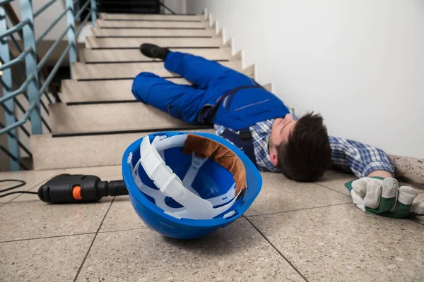
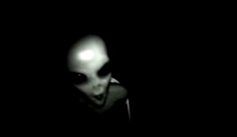

You get up and go to your kitchen to make a sandwich but realize you do not have any pickles. You put your stuff
on to go to the store
You go to the front door and walk inside. The light are on but no one is there. As you walk around you realize
something is wrong. You do not find any pickles and instead find stairs. You go down them and find a dead employee

You walk past the body and ,not paying attention, step on a bee exploding the entire planet
Geetting frightened by the bee you walk in the opposite direction and step on a bee resluting in the planet
exploding.
You go around to the back of the store to find another way in feeling skeptical the front door. As you go around
you find a fence that you climb and go in through the door. It is dark and you can barley see anything infront of
you. You then hear a sound. An inhuman sound. Almost like a high pitched scream. As you continue to walk foward
you see a shadow of something. You get scared as it comes cloer and pops out the dark It is your friend Jimbo!

You get scared and accidenly stab Jimbo by reflex. He dies. You then get eaten by a Xenomorph
You get scared and jump back. Jimbo says "Hola! Como Estas?" You tell him that you are trying to find pickels.
"Sé dónde están los pepinillos. ¡Sígueme!" Jimbo walks through the dark and you follow him. He takes you to the
pickles and you both leave the store happy.